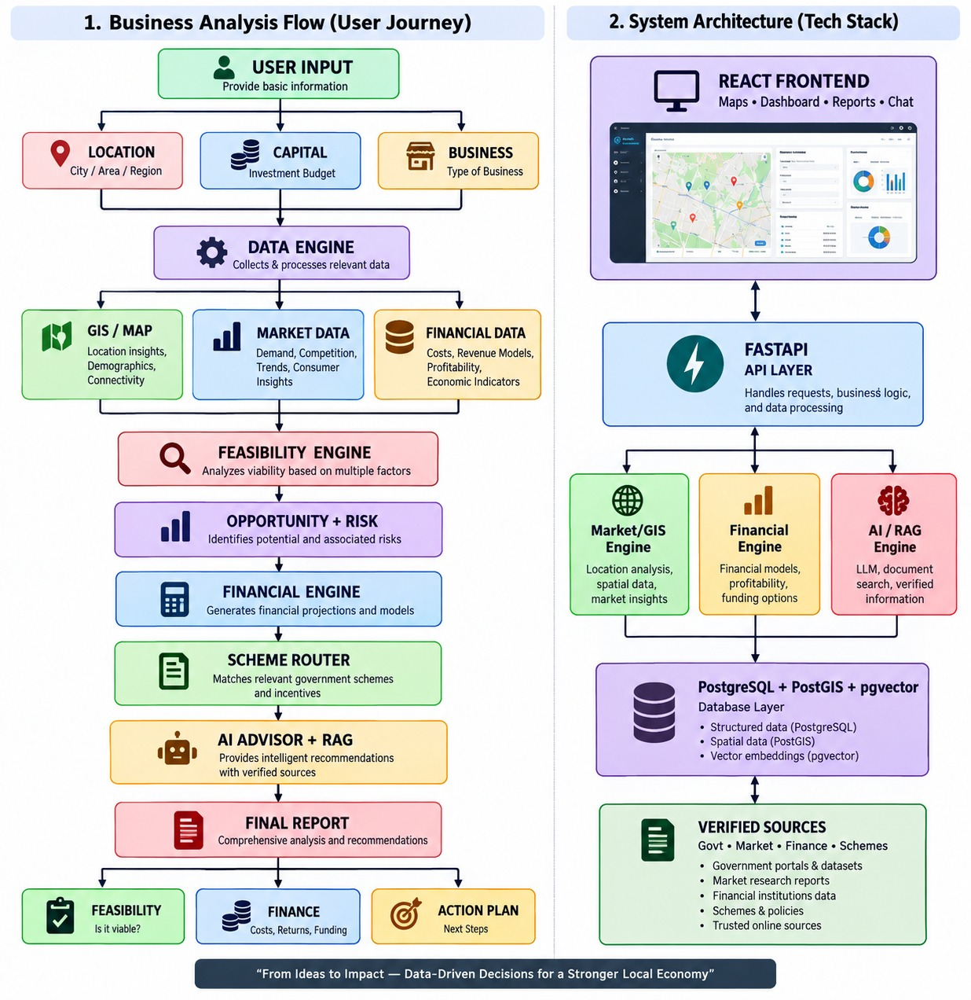

The government provides 90% concessional credit with only 10% beneficiary margin. Yet, thousands of rural micro-enterprises stagnate or default within Year 1 due to two fatal blind spots: zero localized market intelligence and intimidating financial illiteracy.
GramVest is a multilingual AI-driven advisory system and smart financial router. By taking 3 simple inputs, it instantly delivers hyper-local feasibility validation and bank-grade loan structuring in under 5 minutes.
Location (Block/Village), Margin Capital, Proposed Business
5-10km GIS catchment, competitor count & deterministic finance
Viability Score, Indicative Scheme, EMI & Bank-Ready DPR
How raw user parameters flow through spatial intelligence, deterministic math, and grounded RAG to produce an actionable business advisory.

Location (Gram Panchayat / Block), Available Capital (e.g. ₹1,00,000), Proposed Category (Dairy, Retail, Agro).
Fetches spatial 5–10km catchment, demographic density, local mandi prices, and economic indicators.
Evaluates competition headroom, saturation index, supply vulnerabilities, and generates evidence-backed SWOT.
Computes Project Cost (₹10L), Loan (₹9L), quarterly EMI, operational margins, break-even point, and DSCR.
Matches exact SCA/CA concessional scheme rules and explains options in local vernacular via RAG.
Produces an official DPR PDF dossier ready for immediate loan appraisal at banks and SCAs.
Engineered for institutional trust. Numerical calculations are strictly deterministic; generative AI is used exclusively for grounded multilingual explanations.
A clear 4-stage evolutionary path to transform GramVest from a competitive hackathon prototype into national digital public infrastructure.
GramVest replaces weeks of anecdotal guesswork with minutes of institutional-grade financial clarity, empowering marginalized entrepreneurs and protecting public capital.
Ready to empower the next 10 million rural micro-enterprises with data-backed conviction.